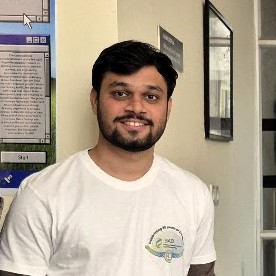

Sachin Kalyani
PhD Research Scholar
PhD student in Computational Biology with a background in biochemistry and molecular biology. I specialize in applying deep learning and statistical methods to genomic and behavioral data, with a focus on neurodevelopmental disorders. Currently working on AI models for early diagnosis and therapeutic understanding.
Started PhD at Institute of Bioinformatics and Applied Biotechnology (IBAB), Bengaluru, India.
I am a PhD research scholar supervised by Prof. Shyam Sundar Rajagopalan at Institute of Bioinformatics and Applied Biotechnology.
My research interests lie at the intersection of Computational Biology and Neuroscience.
I am specifically interested in theoretically understanding and developing effective representations of biological data.
Feel free to reach out if you are interested in collaborating, discussing research, or even just chatting!